長期トレンド
JKMとJEPXシステムプライスの推移グラフ
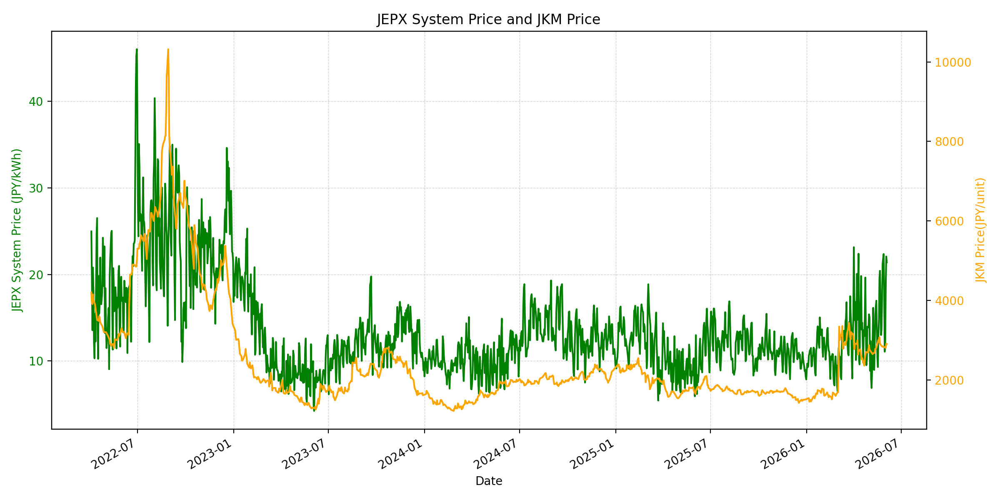
WTIの推移グラフ
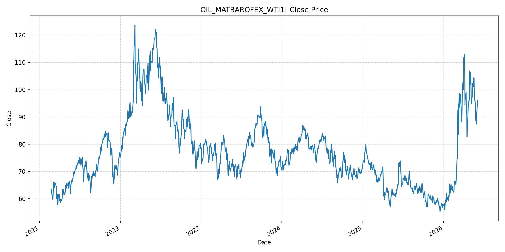
JEPXエリアプライスグラフ（直近一年分）
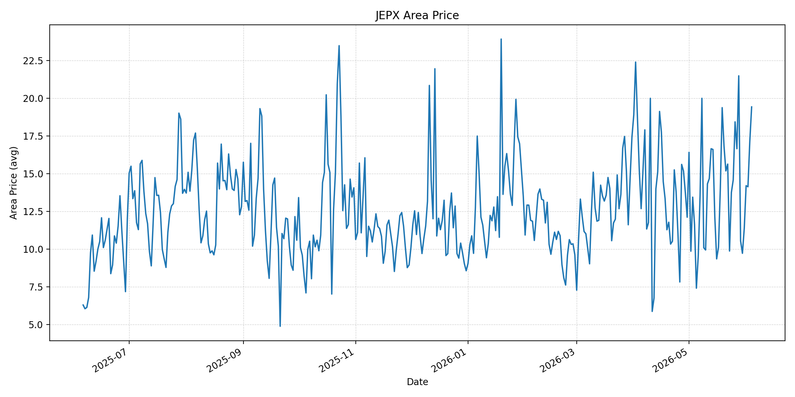
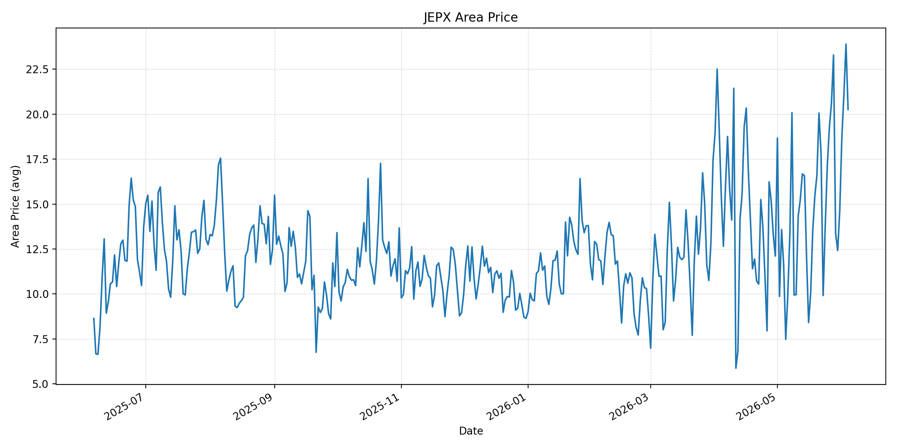
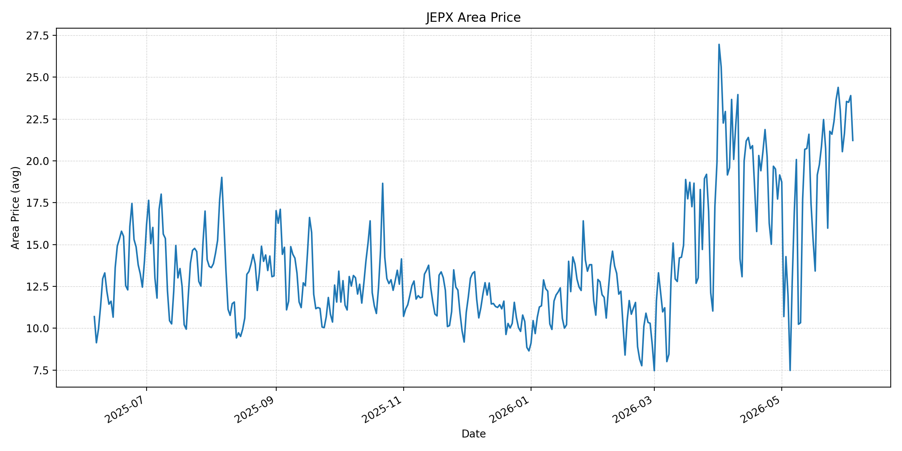
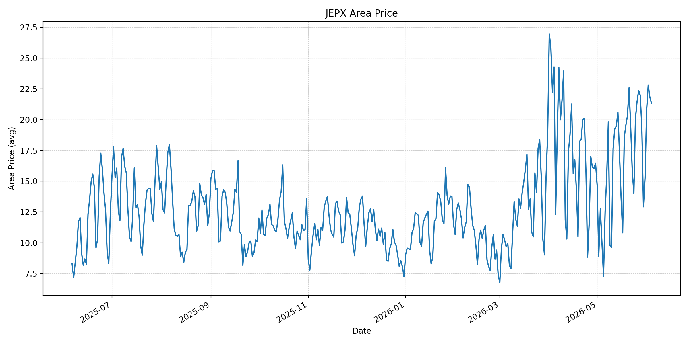
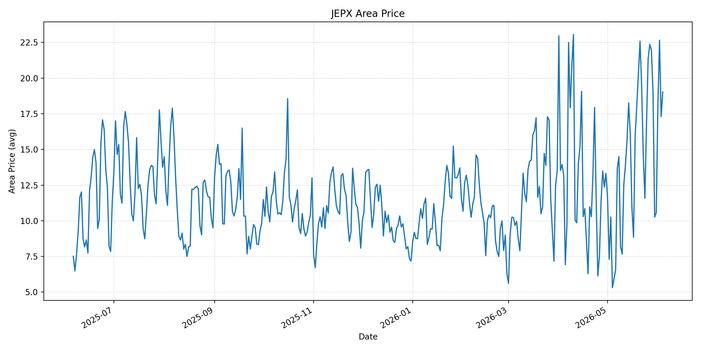
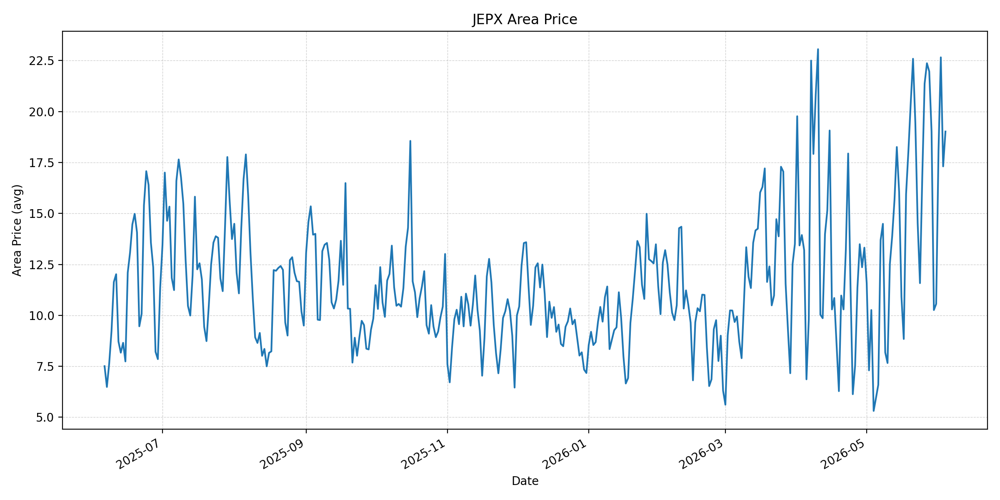
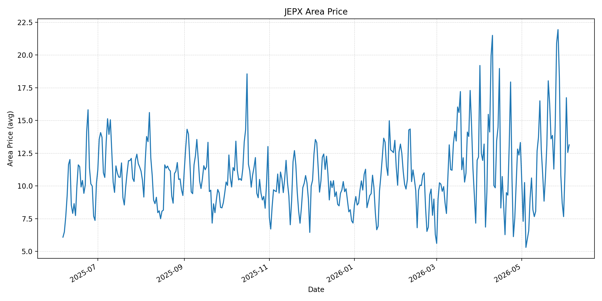
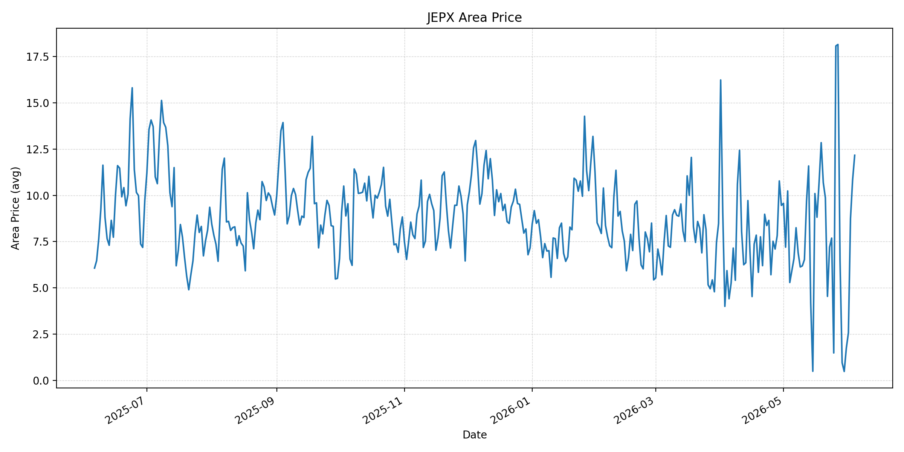
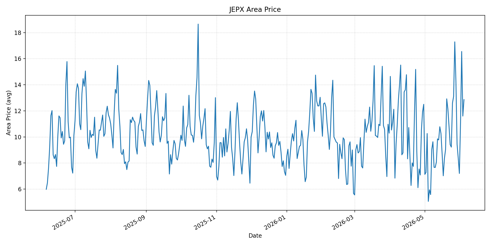
短期トレンド
JKMとJEPXシステムプライスの推移グラフ
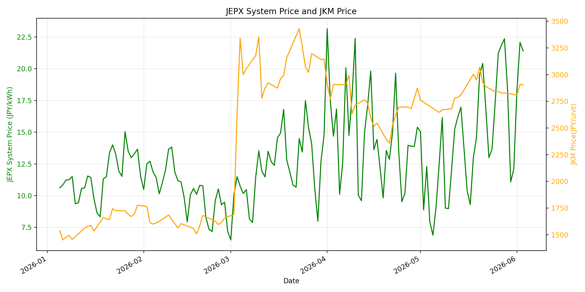
WTIの推移グラフ
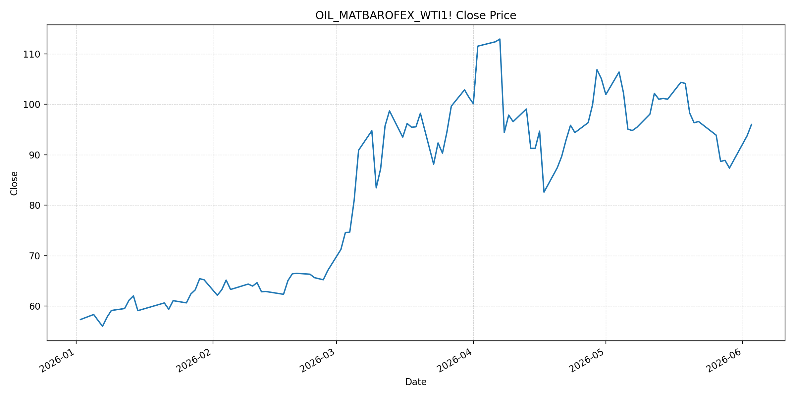
JEPXシステムプライス
JEPXは受渡日ベースの最新非空値で評価しています。最新値は 2026-06-04 分です。先週終値は 2026-05-28 時点の直近値、先月終値は 2026-05-31 時点の直近値で評価しています。
| エリア | 当日価格 | 前日価格 | 前日比（％） | 先週終値 | 先週比（％） | 先月終値 | 先月比（％） | 過去最高値 | 最高値比（％） |
|---|---|---|---|---|---|---|---|---|---|
| システム | 19.45 | 21.40 | -9.11 | 22.36 | -13.01 | 12.10 | 60.74 | 64.06 | -69.64 |
| 北海道 | 19.42 | 17.13 | 13.37 | 21.48 | -9.59 | 11.38 | 70.65 | 73.92 | -73.73 |
| 東北 | 20.26 | 23.90 | -15.23 | 23.29 | -13.01 | 14.64 | 38.39 | 84.92 | -76.14 |
| 東京 | 21.22 | 23.90 | -11.21 | 24.39 | -13.00 | 21.65 | -1.99 | 86.13 | -75.36 |
| 中部 | 21.33 | 21.84 | -2.34 | 21.97 | -2.91 | 15.25 | 39.87 | 52.06 | -59.03 |
| 北陸 | 19.02 | 17.31 | 9.88 | 21.97 | -13.43 | 10.56 | 80.11 | 46.48 | -59.08 |
| 関西 | 19.02 | 17.31 | 9.88 | 21.97 | -13.43 | 10.56 | 80.11 | 46.48 | -59.08 |
| 中国 | 13.14 | 12.56 | 4.62 | 18.21 | -27.84 | 7.66 | 71.54 | 46.48 | -71.73 |
| 四国 | 12.17 | 10.83 | 12.37 | 6.46 | 88.39 | 1.74 | 599.43 | 46.48 | -73.82 |
| 九州 | 12.86 | 11.60 | 10.86 | 14.25 | -9.75 | 7.20 | 78.61 | 40.54 | -68.28 |
LNG先物価格
最新値は 2026-06-03 の LNG(close) です。先週終値は 2026-05-27 時点の直近値、先月終値は 2026-05-29 時点の直近値で評価しています。
| 当日価格 | 前日価格 | 前日比（％） | 先週終値 | 先週比（％） | 先月終値 | 先月比（％） | 過去最高値 | 最高値比（％） |
|---|---|---|---|---|---|---|---|---|
| 2902.00 | 2909.00 | -0.24 | 2828.00 | 2.62 | 2826.00 | 2.69 | 10319.00 | -71.88 |
石油先物価格
最新値は 2026-06-03 の OIL(close) です。先週終値は 2026-05-27 時点の直近値、先月終値は 2026-05-29 時点の直近値で評価しています。
| 当日価格 | 前日価格 | 前日比（％） | 先週終値 | 先週比（％） | 先月終値 | 先月比（％） | 過去最高値 | 最高値比（％） |
|---|---|---|---|---|---|---|---|---|
| 96.02 | 93.76 | 2.41 | 88.68 | 8.28 | 87.36 | 9.91 | 123.70 | -22.38 |
ニュース
イラン情勢に関するニュース
- 2026年6月3日、APは、クウェートの主要空港がイランのドローン攻撃で大きな被害を受け、1人が死亡、数十人が負傷したと報じました。イランは関与を否定していますが、停戦が形式的に残る中で攻撃の応酬が続いている点が市場心理を悪化させています。 参照: AP, 2026-06-03
- 2026年6月3日、APは、米下院がイランに対する米軍事行動を停止させる戦争権限決議を215対208で可決したと報じました。成立にはなお不確実性がありますが、米国内の戦争継続への政治的圧力が強まっていることを示しています。 参照: AP, 2026-06-03
ホルムズ海峡経由の石油・LNGに関するニュース
- 2026年6月3日、Reutersは、中東での敵対行為再燃とテヘラン・ワシントン協議の停滞を受け、原油価格が約2%上昇したと報じました。Brentは97.81ドル、WTIは96.02ドルで引け、当日のOIL(close)と同じ方向の燃料リスク上昇を示しています。 参照: Reuters/Investing.com, 2026-06-03
- S&P Global Market Intelligenceは2026年6月4日のホルムズ危機セッションで、ホルムズ海峡の実質的な閉鎖が日量約1,700万バレルの石油と世界LNG供給の約20%に影響していると整理しています。海峡正常化の遅れは、火力燃料費と電力先物のリスクプレミアムを残します。 参照: S&P Global Market Intelligence, 2026-06-04
ホルムズ海峡経由でない石油・LNGに関するニュース
- 過去24時間で、日本向けの非ホルムズ新規大型調達に関する強い追加報道は確認できませんでした。直近のJOGMEC週次では、北東アジアJKMは和平期待で一時下落したものの、米国とイランの攻撃応酬と夏季需要向けスポット調達により18ドル前半から半ばで推移したと整理されています。 参照: JOGMEC, 2026-06-01
- JOGMECは、カタール・UAEからのLNG輸出がホルムズ問題で制約される中、米国産LNGへの代替需要が生じた一方、輸送距離やタンカー供給の制約がアジア需給の引き締まりにつながったと分析しています。非ホルムズ供給も、船腹・距離・欧州需要との競合で完全な安全弁にはなっていません。 参照: JOGMEC, 2026-05-18
日本国内のイラン戦争に関係するニュース
- 過去24時間で、JEPX制度や国内電力市場制度を直接変更する新規の強い発表は確認できませんでした。直近の国内対策として、経済産業省は2026年5月26日に、7月から9月の電気・ガス料金支援と夏季省エネ呼びかけを説明しています。 参照: 経済産業省, 2026-05-26
- 経済産業省は、現時点では原油やLNGについて日本全体として必要な量は確保できており、従来以上に踏み込んだ節約を求める段階ではないと説明しています。国内支援は小売負担を抑えますが、卸市場の燃料費連動リスクを直接消すものではありません。 参照: 経済産業省, 2026-05-26
インサイト
ニュース事項による日本の電力市場への影響（短期：数日〜1週間）
- JEPXシステムプライスは 19.45 円/kWhで前日比 -9.11% と低下しましたが、先月比は 60.74% と高い水準です。原油が 96.02 まで上昇しているため、スポット電力の一日低下を燃料環境の改善とみなすのは早いです。
- Reutersが報じた中東敵対行為の再燃と協議停滞は、OILの前日比 2.41% 上昇と整合します。LNGは 2902.00 で前日比 -0.24% と小幅低下ですが、先週比 2.62%、先月比 2.69% で、燃料コストはまだ上向きの圧力を残しています。
- 東京 21.22、中部 21.33、東北 20.26 は20円台を維持する一方、中国 13.14、四国 12.17、九州 12.86 は相対的に低いです。短期では燃料ニュースに加え、東日本・中部の需給と西日本の太陽光出力差を分けて見る必要があります。
ニュース事項による日本の電力市場への影響（長期：1ヶ月〜半年）
- ホルムズ海峡の実質的な閉鎖が長引く場合、S&P Globalが示す石油・LNG供給への広範な影響は、日本の火力燃料調達に時間差で残ります。OILは過去最高値比 -22.38% まで戻り余地が縮まっており、夏季の火力稼働期に燃料費調整と卸価格の上振れ要因になります。
- 非ホルムズの米国・豪州LNGは重要ですが、JOGMECが示すようにタンカー需給、航海日数、欧州とのカーゴ競合がボトルネックになります。LNGの過去最高値比は -71.88% と低位ですが、先週比・先月比がプラスである限り、調達コストの下落を前提にした電力価格見通しは置きにくいです。
- 国内の電気・ガス料金支援は家計の小売負担を下げますが、JEPXや発電燃料の市場価格を直接下げる施策ではありません。1ヶ月から半年では、ホルムズ通常通航の実績、夏季需要、東北・東京・中部の20円台維持、LNG在庫の減少ペースを継続監視する必要があります。